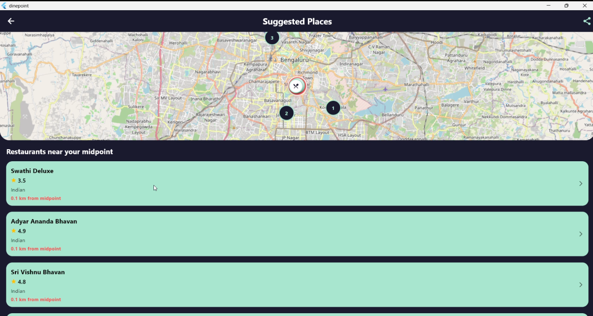
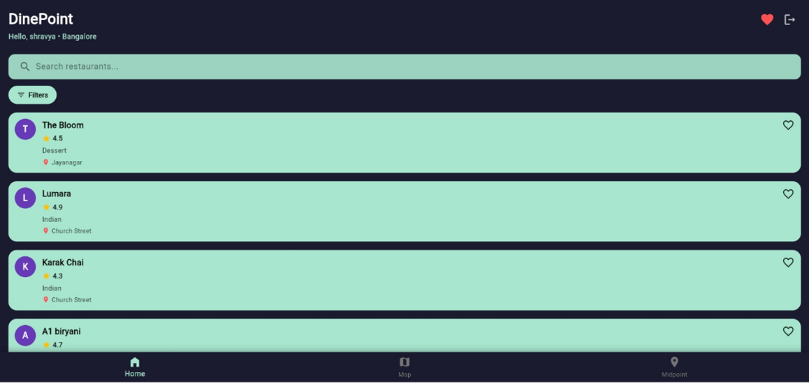
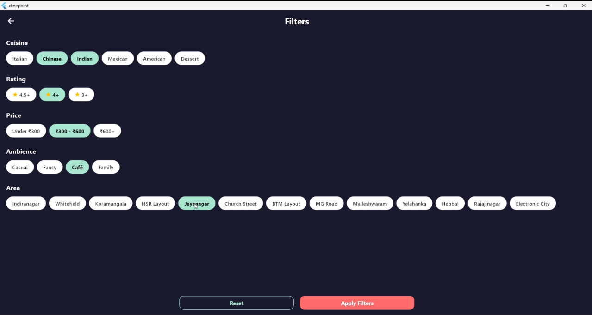
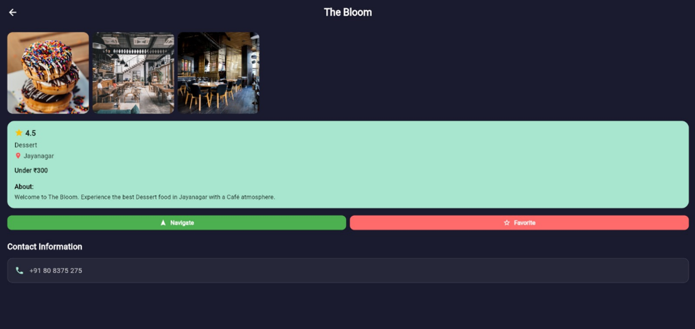
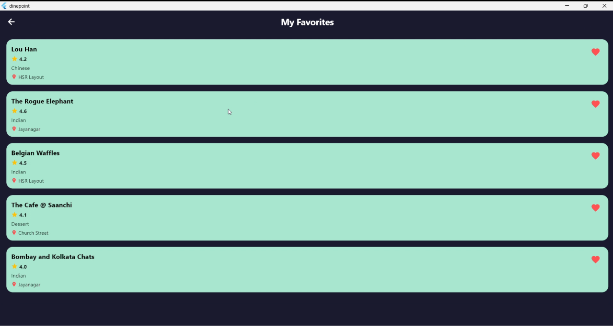
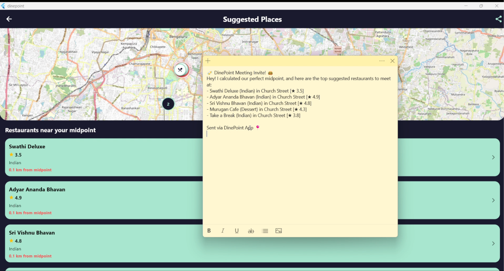
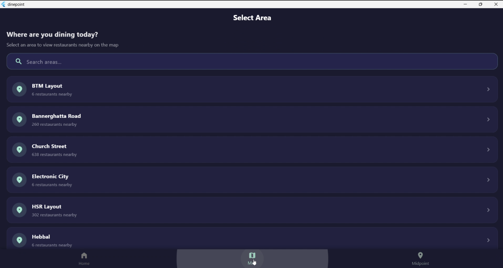

DinePoint
Finding a convenient place to eat when everyone’s coming from different places.

A restaurant discovery app built around convenient meeting points.
DinePoint helps users discover restaurants based on location and provides a midpoint feature for finding convenient places to eat when people are coming from different locations.
Frontend · UI Implementation
Flutter · Dart · OpenStreetMap
2026
Finding a convenient restaurant becomes difficult when everyone is coming from different places.
When people want to meet and eat together, choosing a restaurant can become difficult when everyone is travelling from different locations. DinePoint addresses this by helping users discover restaurants around a convenient midpoint.
Find a convenient meeting point, then discover restaurants around it.
DinePoint combines location-based restaurant discovery with a midpoint feature, helping users find places to eat that are convenient for everyone.
A simple flow from searching to discovering a place to eat.
The experience guides users from searching for a location to finding a midpoint, exploring restaurants and choosing what works best for them.
A simple interface focused on discovering places to eat.
The interface keeps restaurant discovery straightforward, with search, filtering, restaurant details and favourites organized into a clear flow.




Finding a fair meeting point between different locations.
The midpoint feature calculates a central location between two starting points and helps users discover restaurants around that area.

Users can share the calculated midpoint with others, making it easier to coordinate where to meet.
Connecting restaurant discovery with real locations.
The map interface helps users visualize restaurant locations and explore places around their chosen area.

Built with a lightweight mobile-first technology stack.
DinePoint was developed using Flutter and Dart, with OpenStreetMap and Nominatim for location-based features. Restaurant information is handled through local JSON data.
Cross-platform mobile application framework.
Programming language used for the application.
Map data and location visualization.
Location and geocoding support.
Local restaurant data source.
Local persistence for saved preferences.
Building the interface and bringing the experience together.
I worked on the frontend and UI implementation of DinePoint, including the interface, map integration and midpoint feature.
Built the application's user-facing interface and implemented the visual design.
Translated the interface concepts into functional mobile screens.
Integrated the map interface for restaurant locations.
Worked on the feature that helps users find a convenient midpoint between locations.
Building a product is about more than making the interface work.
Working on DinePoint helped me understand how interface decisions, location-based functionality and user flow come together to create a useful product experience.
Designing the experience around how users move from one task to the next.
Understanding how maps and location-based functionality influence the interface.
Translating a product idea into clear, usable screens and interactions.
Expanding DinePoint into a more personalized experience.
The current version focuses on restaurant discovery and midpoint-based recommendations. Future improvements could make the experience more personalized, connected and useful.
Use real-time location data to make restaurant discovery and midpoint calculations more dynamic.
Recommend restaurants based on user preferences, previous choices and location.
Move restaurant data to a cloud-based system so information can be updated more easily.
Extend the platform with restaurant availability and booking functionality.